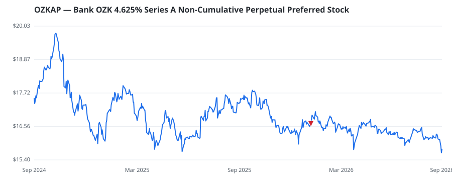

bullish · bearish · n/a — dots: price>SMA10 · SMA10>SMA50 · SMA50>SMA200 · up>down volume (20d)

Bank OZK is a bank holding company that owns and operates a community bank, Bank of the Ozarks. The bank operates offices in Arkansas, Georgia, Florida, North Carolina, Texas, California, New York and Mississippi. It provides banking services, including checking, savings, money market, time deposits, and individual retirement accounts, as well as loan services, such as real estate, consumer, commercial, and industrial loans. Apart from providing traditional banking products and services, it also provides trust and wealth management, financial planning, online banking, and other related service · website